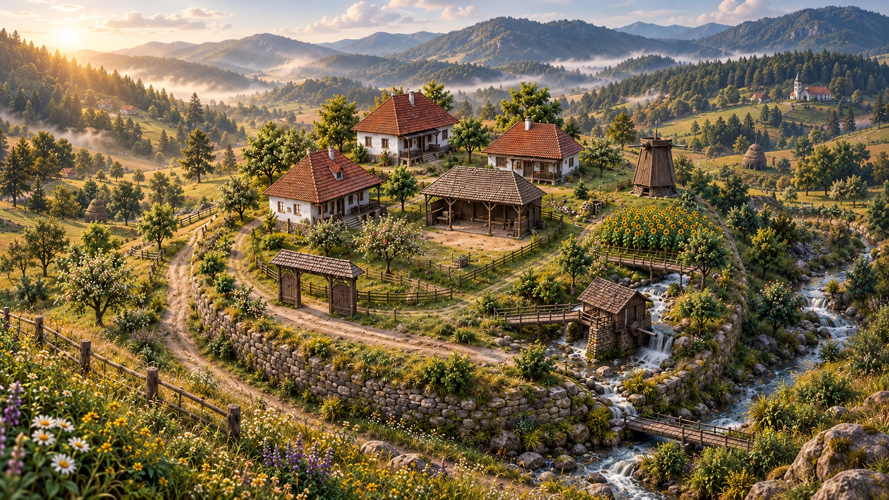

◈
desktop weather
A little world inside your PC
Connecting
Settings
Fullscreen
Screen mode

THE ROMANIAN VILLAGE
A small world.
A living connection.
Waiting for your computer’s heartbeat.
No readings yet
Morning light
CPU
tractor speed
—
Waiting for a sample
GPU
windmill speed
—
No GPU reading
MEMORY
hay in the barn
—
No memory reading
NETWORK
gentle rain
—
No network reading
DISK
waterwheel speed
—
No disk reading
Exit screen mode